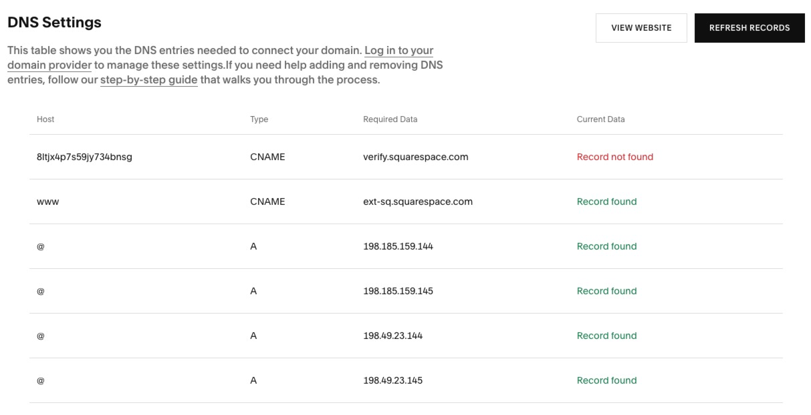
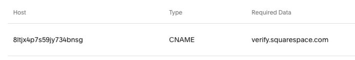
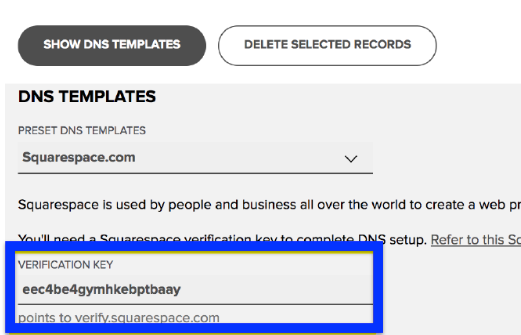
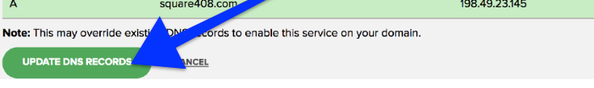
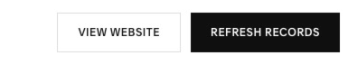

Connect your Name.com domain to Squarespace
You’ll get your site’s settings from Squarespace and save them in Name.com. Once the saved records match, your part in Name.com is done. Squarespace is where you’ll see when your site is connected.
Already saved? Check that your setup is complete ↓
Before you start
Use this guide if Name.com manages your DNS. If another provider manages it, enter Squarespace’s records there. Check who manages your DNS.
1. Get the records from Squarespace
In your site’s Domains panel, select Use a domain I own and enter your full domain. Select Connect domain, choose Name.com, and continue until the record list appears. Keep this tab open.

2. Copy the key and save the records
Copy from Squarespace
Find the row pointing to verify.squarespace.com. Copy the letters and numbers in the Name column, labeled Host in the example below.

Paste into Name.com
In a second tab, open My Domains and choose your domain. Select Manage DNS Records, then Show DNS Templates. Choose Squarespace.com and paste the code into Verification Key.

Quick check: which value did you paste?
It should match the unique code in your Squarespace tab. If you pasted verify.squarespace.com, copy the code from the same row and replace it.
Review, then save
The template can replace existing records. Keep records used for email. If a proposed change conflicts with a record you don’t recognize, check its purpose first. When the preview looks right, select Update DNS Records.

3. Check that your Name.com setup is complete
In Name.com, find the two CNAME records and four A records for your website. Compare their names and values with the six entries in your Squarespace tab. Leave records for other services as they are.
What do your saved records show?
All six match. Your Name.com setup is complete. It’s safe to close the Name.com tab. You can check the connection in Squarespace later.
A record is missing or different. Keep both tabs open. Use your Squarespace list to correct that entry in Name.com, then check it again. See the record-by-record guide.
Saw a save error? Check what was saved before retrying. If a change is missing, follow the error message and retry that change.
4. Confirm the connection in Squarespace
Connection can take 24–48 hours. To check progress, open your domain’s DNS settings in Squarespace and select Refresh records.

Connected in the Domains panel means Squarespace has verified the connection. You’re done.
Still pending after 48 hours? Use Squarespace’s DNS checker to identify the record that needs attention.